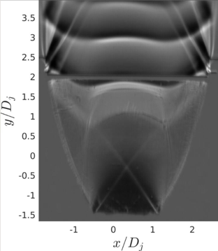
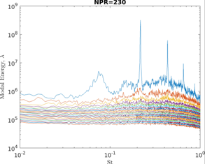
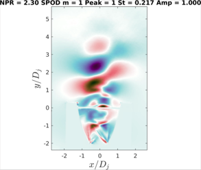

Scope
- Design and build a glass-walled planar nozzle for optical access, with contour based on an axisymmetric TOP nozzle (area ratio 2.45, throat width 15 mm).
- Image the flow with high speed schlieren to investigate free shock separation and restricted shock separation across NPR 2.0-6.0.
- Apply Spectral Proper Orthogonal Decomposition (SPOD) to schlieren sequences to identify coherent structures, feedback mechanisms and acoustic modes causing the phenomenon.
- Compare experimental observations with CFD predictions and prior literature to better understand the underlying mechanism of FSS/RSS side loadings.
Key Characteristics
FSS and RSS
FSS occurs in all nozzle types (conical, TIC, TOP, TOC). RSS only occurs in TOC and TOP nozzles, characterised by an internal shock meeting the triple point. Both cause unwanted side loadings from azimuthal modes of a resonant feedback loop.
Planar nozzle
15 mm throat, area ratio 2.45, based on axisymmetric TOP Nozzle (AR 6 at 80% length). Glass walls provide full optical access for schlieren visualisation of the shock structure and separation points.
Schlieren and SPOD
Schlieren at up to 150k FPS with 125 mm and 300 mm focal lengths. SPOD analysis reveals feedback mechanisms, screech tones and modal energy distribution across the flow field.

CFD modelling
CFD results comparing expected flow separation and expansion behaviour across the operating range for the planar nozzle contour going from free jet to FSS.

Schlieren imaging
Mean schlieren visualisation used to validate the flow structure and separation points at NPR 6 against CFD predictions.
Design Overview
Planar nozzle design
- Planar geometry based on an axisymmetric TOP nozzle contour, Nozzle C (AR 6 at 80% length) scaled to a planar area ratio of 2.45.
- Throat diameter 15 mm, 9 mm thick, with glass side walls providing full optical access for schlieren imaging. I did the manufacturing, machining and assembly.
- First attempt suffered from poor gasket sealing causing leaks, visual artifacts and flow flapping throughout the experiment.
- Second attempt sealed with silicone caulking, significantly improving image quality and flow stability across all NPR conditions.

Test article
Glass-walled planar nozzle mounted in the shock lab with pressure taps and schlieren optics aligned.
Flow regimes observed
- NPR 2.0-2.7: Free jet, no wall attachment, flow exits as a free expansion. Mean schlieren matches CFD planar predictions.
- NPR 2.8: Transition point where flow begins to interact with the nozzle wall, marking the onset of attachment.
- NPR 3.0-6.0: Fully attached flow where Coanda effect causes complete wall attachment rather than the partial FSS expected from axisymmetric behaviour.
- The planar geometry and Coanda effect appear to stabilise the flow once attached, suppressing the azimuthal modes that cause side loadings in axisymmetric nozzles.
Low NPR (wide view)
High-speed schlieren at low NPR showing the free jet regime before flow attachment.
Low NPR (close-up)
Zoomed-in high-speed recording of the same low NPR case, resolving finer shock structures.
SPOD and modal analysis
- Spectral Proper Orthogonal Decomposition applied to schlieren sequences to identify coherent structures and feedback mechanisms.
- Sharp spectral peaks appear at low NPR (free jet regime) and disappear once attachment occurs at higher NPR.
- The broad and sharp peaks appear linked. Strouhal values are additive combinations of each other, suggesting mach disk wobbling (broad peak) may drive the screech-like tones (sharp peaks).
- Broad peaks could indicate transonic resonance but don't fit the current model well. Sharp peaks may be screech but this is uncertain in a planar nozzle geometry.

Screech analysis
Screech peak identification showing dominant acoustic frequencies across the NPR range and their relation to flow regime transitions.

SPOD modes
Spatial modes from SPOD analysis revealing the underlying feedback structures in the overexpanded planar nozzle flow.
SPOD video
SPOD reconstruction showing dominant modal behaviour and wave propagation across the nozzle flow field.
Results and discussion
- Sharp spectral peaks appear at low NPR (free jet regime) and disappear after flow attachment occurs at higher NPR. The attached Coanda-driven flow suppresses acoustic feedback.
- Broad peak also disappears shortly after attachment, indicating the mach disk wobbling mode is stabilised once the flow sticks to the wall.
- Coanda effect is potentially playing a key role: entrainment flow creates negative pressure causing attachment to the wall. At low NPR the flow bends to one side; when the flow splits (forks), the two separate streams are immediately attracted to the respective walls and stick, contradicting CFD.
- Broad and sharp peaks appear linked. St values are additive combinations of each other, suggesting mach disk wobbling (broad peak) drives the screech-like peaks (sharp peaks).
- The NPR 2.3 case at 300 mm focal length shows the mach disk wobbling has multiple modes, further supporting this coupling hypothesis.
Mean flow
Mean schlieren image at NPR 6.0 showing the attached flow regime.
Acoustic peaks
Screech peak at free jet NPR range showing broad peak and resonant sharp peaks.
Personal takeaways
- Went from never having heard of FSS or RSS to a solid base understanding of the physics, shock structures and separation behaviour in overexpanded nozzles.
- Gained hands-on lab experience: setting up and running schlieren, analysing data, running high-speed cameras at 150k FPS.
- Learnt CFD modelling of nozzle flows and how to compare experimental schlieren with computational predictions.
- Developed data analysis skills in SPOD, reading mode shapes, spectra and wavenumber spectrums to identify coherent structures.
- Began exploring the relationship between transonic resonance, screech and mach disk wobbling in the feedback loop.
- Furthered my understanding of aeroacoustics, design and the scientific method.